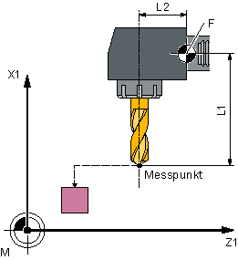
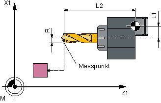
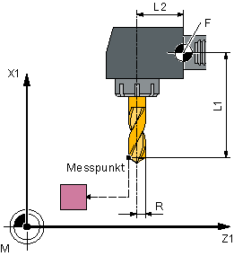

Funktion
Mit dieser Messvariante kann die Werkzeuglänge (L1 oder L2) eines Bohrers gemessen werden. Die Messvariante prüft, ob die zu korrigierende Differenz zur alten Werkzeuglänge innerhalb eines definierten Toleranzbereiches liegt:
-
Obergrenzen: Vertrauensbereich TSA und Maßdifferenzkontrolle DIF
-
Untergrenze: Nullkorrekturbereich TZL
Bei Einhaltung dieses Bereichs wird die neue Werkzeuglänge in die Werkzeugkorrektur übernommen, anderenfalls bei Überschreitung eine Alarmmeldung ausgegeben. Bei Unterschreitung der Untergrenze wird nicht korrigiert.
Messprinzip
Es wird die Länge (L1 oder L2) des Bohrers in der parametrierten Messachse gemessen.
Länge L2 messen | Länge L1 messen |
|---|---|
 |  |
Länge L1 messen | Länge L2 messen |
|---|---|
|  |  |
Messen Länge: Bohrer (CYCLE982), Beispiel Werkzeuglage: ↓ radiale Stellung
| Hinweis |
Wird die Länge des Bohrers durch seitliches Anfahren an den Messtaster vermessen, so ist sicherzustellen, dass der zu vermessende Bohrer den Messtaster nicht im Bereich der Drall-Nut oder im Bereich seiner Bohrerspitze auslenkt. Voraussetzung ist, dass der Bohrerradius in der Werkzeugkorrektur eingetragen wurde, andernfalls wird ein Alarm ausgelöst. |
Voraussetzungen
Der Werkzeugmesstaster muss kalibriert sein.
Die ungefähren Werkzeugabmessungen müssen in die Werkzeugkorrekturdaten eingegeben sein:
Werkzeugtyp: 2xy (Bohrer)
Länge 1, Länge 2
Das zu vermessende Werkzeug muss mit seinen Werkzeugkorrekturwerten bei Zyklusaufruf aktiv sein.
Das kanalspezifische SD42950: $SC_TOOL_LENGTH_TYPE sollte standardmäßig mit 2 belegt sein (Längenzuordnung wie bei Drehwerkzeugen). Für spezielle Anwendungen kann der Wert 0 verwendet werden.
Ausgangsposition vor dem Messen
Von der Startposition aus muss ein kollisionsfreies Anfahren an den Messtaster möglich sein.
Die Ausgangspositionen befinden sich außerhalb des unerlaubten Bereichs (siehe folgendes Bild).

① bis ④ | erlaubter Bereich |
Bohrer messen: mögliche Ausgangspositionen in der 2. Achse der Ebene (bei G18: X)
Position nach Messzyklus-Ende
Die Werkzeugspitze steht um den Messweg gegenüber der Messfläche.